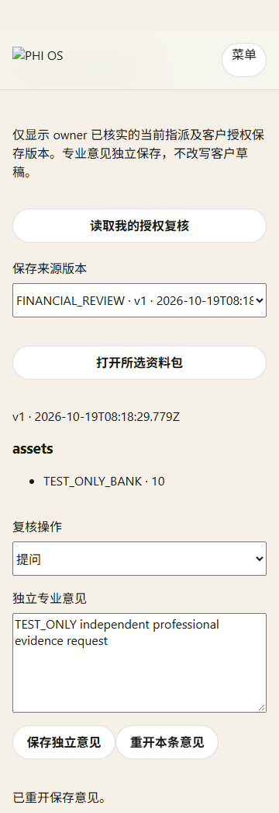
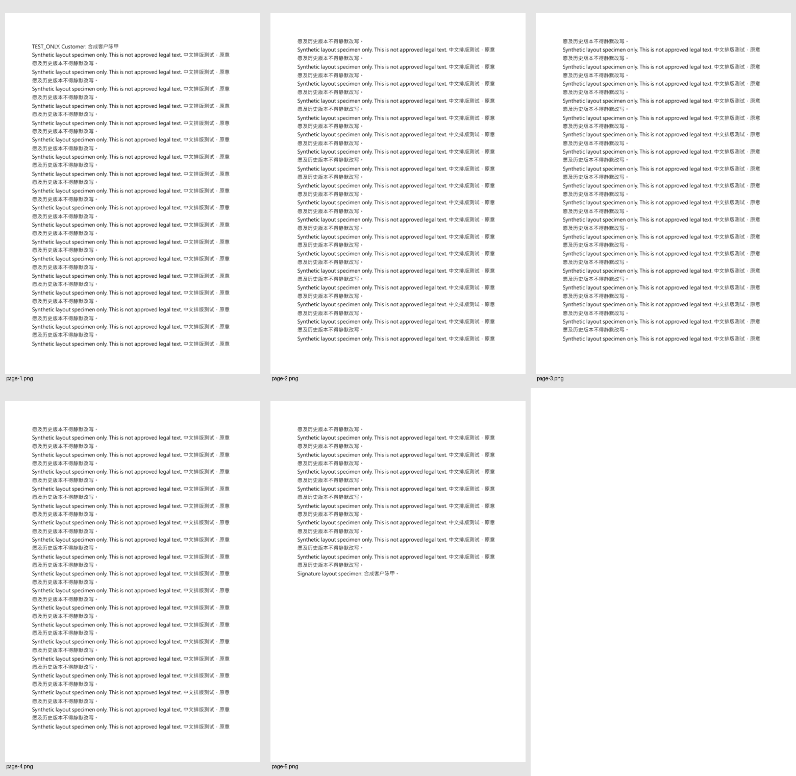
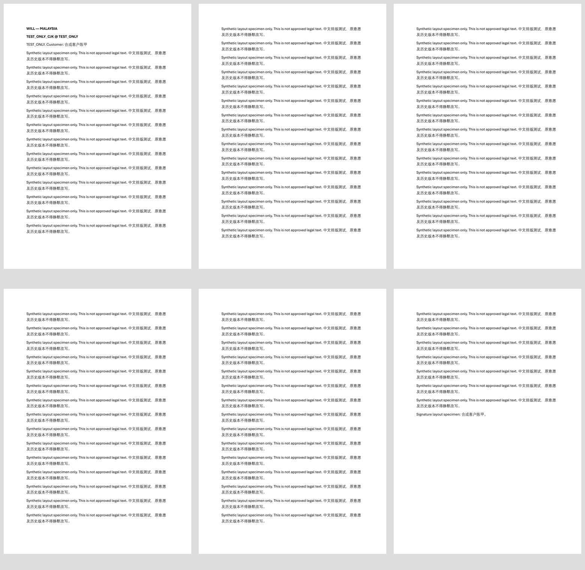
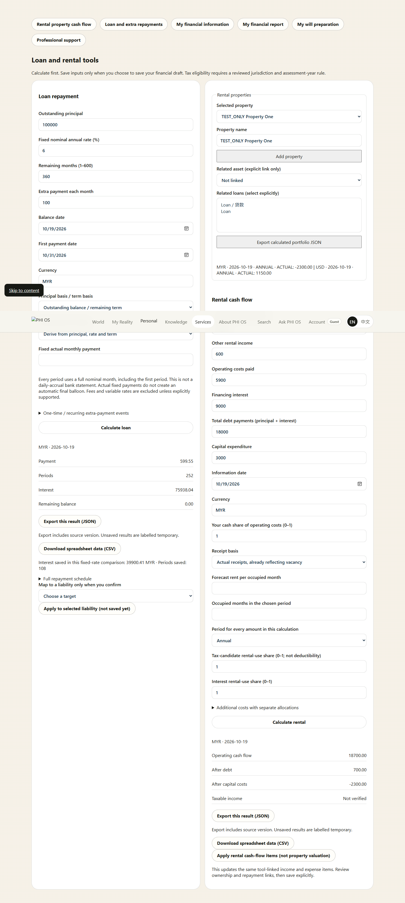
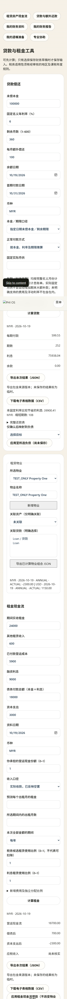

READY_FOR_SCOPED_HUMAN_REVIEW_WITH_EXTERNAL_BLOCKERS · 2026-10-19T08:24:49.392Z
HEAD 4009d2509aeb30c86ec18c39764414f1127b27db · index EMPTY
这是本地合成验收，本任务未部署、未运行生产迁移。另一窗口已把HEAD推进至4009d250（atlas），并包含多数财务文件；本任务未stage/commit/push，不回滚该历史。真实财务 AI、税务包、签署版法律母版和真实专业发送仍未准入。不是 Human ACCEPT 回执。
本地浏览器：真实页面、API处理器、SQLite与AES；TEST_ONLY server identity；所有外网请求阻断。生产 OIDC 未测，既有 R2 图示加载与完整视觉稳定性未据此宣称通过。
Account owner 的 SavedDraftRef → purpose grant → 同版 FDR/FCR/FAR证据 → 摘要／报告。Will导入精确绑定源、映射digest及目标CAS；只更新确认的财务章节，不推定人选角色，不改旧意愿与历史文件。专业读取先通过既有身份、资格、指派及consent owner，再加载精确所选源。
v1密文保留原schema/AAD；明确保存才产生v2。公式运行在财务owner，模型不能计算／改写权威数值；报告正文为闭合事实语法和来源数值节点。生产模型预算为0。
| 工作簿 | SHA-256 | 公式／缓存错误 |
|---|---|---|
| Monthly Amortization for all.xlsx | 7b5da94486f4138dd4f259cd298ec0d008a26619337fac5ea9f8acba9639e0cc | Property name: 4633 / 428 |
| Malaysia_Net_Rental_Income_Calculator_Bilingual.xlsm | 7389883af41a527674d9e543990064991085f0331564a54bad395d94ee892c0f | Calculator 计算器: 16 / 0; Guide 使用说明: 0 / 0 |
贷款：E13引用I12文字、14个失效名称、428个缓存错误独立登记；不复现错误作为通过。6组Master金样以整数分、逐期HALF_UP验证；G5利息75938.04、节省39900.41、缩短108期。租赁：24600−14900=9700仅为算术候选；营运18700、偿债后700、资本后−2300分开显示。税务结论保持未知。
逐格公式／缺陷证据（无原始私人输入字节）；字段／公式／数值映射；金样和边界断言。
多物业新增／切换／加密保存重开、分组汇总与费用字段元数据已接入现有财务入口。专业端已有可信账户 → owner 记录 → 当前资格／指派／同意 → 精确资料包 → 独立意见保存重开，不再依赖浏览器声明权限。
实现范围、逐项审批边界及恢复方式 · 专业端四组浏览器证据。真实专业资格／主体授权仍未提供；本地测试凭证不会提升为生产权威。

| 检查 | 退出码 | 结果 | 日志 |
|---|---|---|---|
| application-tests | 0 | PASS | .tmp/finance-validation/application-tests-1792398073533.log |
| reference-tests | 0 | PASS | .tmp/finance-validation/reference-tests-1792398073788.log |
| existing-privacy | 0 | PASS | .tmp/finance-validation/existing-privacy-1792398074024.log |
| existing-financial-successor | 0 | PASS | .tmp/finance-validation/existing-financial-successor-1792398074282.log |
| existing-report-material | 1 | BASELINE_FAILURE | .tmp/finance-validation/existing-report-material-1792398074606.log |
| legacy-fcr-runtime | 0 | PASS | .tmp/finance-validation/legacy-fcr-runtime-1792398074754.log |
| legacy-fcr-determinism | 0 | PASS | .tmp/finance-validation/legacy-fcr-determinism-1792398074892.log |
| legacy-fcr-fdr-boundary | 0 | PASS | .tmp/finance-validation/legacy-fcr-fdr-boundary-1792398074993.log |
| legacy-fcr-contracts | 0 | PASS | .tmp/finance-validation/legacy-fcr-contracts-1792398075097.log |
| legacy-fcr-freeze | 1 | BASELINE_FAILURE | .tmp/finance-validation/legacy-fcr-freeze-1792398075221.log |
| functions-compile | 0 | PASS | .tmp/finance-validation/functions-compile-1792398078386.log |
应用测试与48项参考测试分别记录。BASELINE_FAILURE 未改测试或冻结hash：既有报告material检查在执行断言前因其他continuity JSON import attribute缺失失败。历史FCR freeze所有artifact hash通过，随后因package脚本已由既有零费用runner接管、旧字符串断言不再匹配而失败；未改其测试或冻结证据。
{"PASS":75,"FAIL":0,"NOT_RUN":0,"BLOCKED":6,"NOT_APPLICABLE":0}；每项限于所列范围，部分复合场景未完整观察即保留NOT_RUN。
| ID | 场景 | 状态 | 证据／限制 |
|---|---|---|---|
| A01 | P1/P2/P3 删除 P2、保存恢复、新增 | PASS | M1-BROWSER-EVIDENCE.json — Local test-only server identity, 360/768/1440 × en/zh-Hans; existing remote illustrations blocked, not visually accepted. Production account OAuth not exercised. |
| A02 | 删除仍被引用的人物或资产 | PASS | M1-BROWSER-EVIDENCE.json — Local test-only server identity, 360/768/1440 × en/zh-Hans; existing remote illustrations blocked, not visually accepted. Production account OAuth not exercised. |
| A03 | v1 合成加密草稿读取 | PASS | VALIDATION.json — Local SQLite/AES, typed corruption, retention/hold and exact-version checks; no production data. CAS backend proof; separate two-browser editing UI not exercised. |
| A04 | v1 明确保存升级 v2 | PASS | VALIDATION.json — Local SQLite/AES, typed corruption, retention/hold and exact-version checks; no production data. CAS backend proof; separate two-browser editing UI not exercised. |
| A05 | 两窗口并发保存 | PASS | VALIDATION.json — Local SQLite/AES, typed corruption, retention/hold and exact-version checks; no production data. CAS backend proof; separate two-browser editing UI not exercised. |
| A06 | 更改未保存表单后请求导入/报告 | PASS | M1-BROWSER-EVIDENCE.json — Local test-only server identity, 360/768/1440 × en/zh-Hans; existing remote illustrations blocked, not visually accepted. Production account OAuth not exercised. |
| A07 | 请求指定 version/digest | PASS | VALIDATION.json — Local SQLite/AES, typed corruption, retention/hold and exact-version checks; no production data. CAS backend proof; separate two-browser editing UI not exercised. |
| A08 | 跨账户 draft ID/owner 伪造 | PASS | VALIDATION.json — Local SQLite/AES, typed corruption, retention/hold and exact-version checks; no production data. CAS backend proof; separate two-browser editing UI not exercised. |
| A09 | 密文/AAD/schema/digest 损坏 | PASS | VALIDATION.json — Local SQLite/AES, typed corruption, retention/hold and exact-version checks; no production data. CAS backend proof; separate two-browser editing UI not exercised. |
| A10 | 到期、删除请求、legal hold | PASS | VALIDATION.json — Local SQLite/AES, typed corruption, retention/hold and exact-version checks; no production data. CAS backend proof; separate two-browser editing UI not exercised. |
| A11 | restore 利率/币种/precision/relatedAssetRefs | PASS | M1-BROWSER-EVIDENCE.json — Local test-only server identity, 360/768/1440 × en/zh-Hans; existing remote illustrations blocked, not visually accepted. Production account OAuth not exercised. |
| A12 | 预览 ephemeral 与已保存/FDR 来源混用 | PASS | VALIDATION.json — Local SQLite/AES, typed corruption, retention/hold and exact-version checks; no production data. CAS backend proof; separate two-browser editing UI not exercised. |
| LOOP01 | 现有入口填写→保存→重开→摘要 | PASS | M1-BROWSER-EVIDENCE.json, VALIDATION.json — Refresh and independent-process persistence pass. Production logout/re-login identity provider remains runtime-unverified. |
| LOOP02 | Will 导入提案→确认→重开 | PASS | M1-BROWSER-EVIDENCE.json — Local test-only server identity, 360/768/1440 × en/zh-Hans; existing remote illustrations blocked, not visually accepted. Production account OAuth not exercised. |
| LOOP03 | financial v3→v4 | PASS | M1-BROWSER-EVIDENCE.json — Local test-only server identity, 360/768/1440 × en/zh-Hans; existing remote illustrations blocked, not visually accepted. Production account OAuth not exercised. |
| LOOP04A | proposal 后绑定源不可读/digest或映射不符、grant撤回或到期、目标WILL CAS改变 | PASS | VALIDATION.json — Stale mapping, target CAS, source deletion, grant expiry/revoke; chosen older source remains valid. Role mappings are not inferred. |
| LOOP04B | proposal 绑定 v3，latest 新增 v4 | PASS | VALIDATION.json — Stale mapping, target CAS, source deletion, grant expiry/revoke; chosen older source remains valid. Role mappings are not inferred. |
| LOOP05 | dependant/nominee/beneficiary/executor | PASS | VALIDATION.json — Stale mapping, target CAS, source deletion, grant expiry/revoke; chosen older source remains valid. Role mappings are not inferred. |
| B01 | gross 10,000、已扣税 2,000、其他收入 500、含月供支出 5,000 | PASS | VALIDATION.json — Synthetic deterministic values and explicit unknowns; no tax approval inferred. B08 reports independent education goals and missing insured-event authority, not a combined household gap. |
| B02 | 上例支出明确不含月供 1,500 | PASS | VALIDATION.json — Synthetic deterministic values and explicit unknowns; no tax approval inferred. B08 reports independent education goals and missing insured-event authority, not a combined household gap. |
| B03 | 现金 20,000、全额持有房产 300,000、债务 200,000，同币种/日期 | PASS | VALIDATION.json — Synthetic deterministic values and explicit unknowns; no tax approval inferred. B08 reports independent education goals and missing insured-event authority, not a combined household gap. |
| B04 | 已确认空清单与未填写资产 | PASS | VALIDATION.json — Synthetic deterministic values and explicit unknowns; no tax approval inferred. B08 reports independent education goals and missing insured-event authority, not a combined household gap. |
| B05 | EXACT/APPROXIMATE/RANGE/UNKNOWN | PASS | VALIDATION.json — Synthetic deterministic values and explicit unknowns; no tax approval inferred. B08 reports independent education goals and missing insured-event authority, not a combined household gap. |
| B06 | 外币且缺或不支持 FX pair | PASS | VALIDATION.json — Synthetic deterministic values and explicit unknowns; no tax approval inferred. B08 reports independent education goals and missing insured-event authority, not a combined household gap. |
| B07 | 0–1 比率、0–100 百分数、月数/年数 | PASS | VALIDATION.json, M1-BROWSER-EVIDENCE.json — Ratio/frequency metadata and zero-denominator checks; full visual unit review remains limited to changed surfaces. |
| B08 | 多教育目标/多 insured person/不同风险事件 | PASS | VALIDATION.json — Synthetic deterministic values and explicit unknowns; no tax approval inferred. B08 reports independent education goals and missing insured-event authority, not a combined household gap. |
| L01 | L-G01–L-G06 合成金样 | PASS | VALIDATION.json — Synthetic deterministic values and explicit unknowns; no tax approval inferred. B08 reports independent education goals and missing insured-event authority, not a combined household gap. |
| L02 | 原表 E13、失效名称和 cached errors | PASS | INPUT-WORKBOOK-AUDIT.json, VALIDATION.json — Original workbook read-only: E13 text opening-balance reference, 14 invalid defined names and 428 cached errors recorded; master 419 is a subset, not the complete workbook count. No original recalculation or edits. |
| L03 | 月供不足/实际月供与期限推导不同 | PASS | VALIDATION.json — Synthetic deterministic values and explicit unknowns; no tax approval inferred. B08 reports independent education goals and missing insured-event authority, not a combined household gap. |
| L04 | 请求 extra 超余额/重复/结清后 | PASS | VALIDATION.json — Synthetic deterministic values and explicit unknowns; no tax approval inferred. B08 reports independent education goals and missing insured-event authority, not a combined household gap. |
| L05 | 最后一期舍入/剩余余额 | PASS | VALIDATION.json — Synthetic deterministic values and explicit unknowns; no tax approval inferred. B08 reports independent education goals and missing insured-event authority, not a combined household gap. |
| L06 | 月末/闰年/超最大期/非法期数 | PASS | VALIDATION.json — Synthetic deterministic values and explicit unknowns; no tax approval inferred. B08 reports independent education goals and missing insured-event authority, not a combined household gap. |
| L07 | 页面→试算→保存关联贷款→重开→导出 | PASS | M1-BROWSER-EVIDENCE.json — Local test-only server identity, 360/768/1440 × en/zh-Hans; existing remote illustrations blocked, not visually accepted. Production account OAuth not exercised. |
| R01 | 原表 24,600/14,900 算术样例 | PASS | VALIDATION.json — Synthetic deterministic values and explicit unknowns; no tax approval inferred. B08 reports independent education goals and missing insured-event authority, not a combined household gap. |
| R02 | 明确现金费用 5,900、还款 18,000、资本支出 3,000 | PASS | VALIDATION.json — Synthetic deterministic values and explicit unknowns; no tax approval inferred. B08 reports independent education goals and missing insured-event authority, not a combined household gap. |
| R03 | 实际租金 20,000 已有空置影响 | PASS | VALIDATION.json — Synthetic deterministic values and explicit unknowns; no tax approval inferred. B08 reports independent education goals and missing insured-event authority, not a combined household gap. |
| R04 | 面积 unknown/0/超范围/真实零 | PASS | VALIDATION.json — Synthetic deterministic values and explicit unknowns; no tax approval inferred. B08 reports independent education goals and missing insured-event authority, not a combined household gap. |
| R05 | ratio 0.25 与错误输入 25 | PASS | VALIDATION.json — Synthetic deterministic values and explicit unknowns; no tax approval inferred. B08 reports independent education goals and missing insured-event authority, not a combined household gap. |
| R06 | sinking fund/维修等资格不明 | PASS | VALIDATION.json — Synthetic deterministic values and explicit unknowns; no tax approval inferred. B08 reports independent education goals and missing insured-event authority, not a combined household gap. |
| R07 | 多物业有正负净额 | PASS | VALIDATION.json — Negative property results aggregate before any tax-loss treatment; no approved tax grouping/loss-order calculation is claimed. |
| R08 | 税包缺/过期/年度不匹配 | PASS | VALIDATION.json — Synthetic deterministic values and explicit unknowns; no tax approval inferred. B08 reports independent education goals and missing insured-event authority, not a combined household gap. |
| R09 | 贷款利息已含在 debt service | PASS | VALIDATION.json — Synthetic deterministic values and explicit unknowns; no tax approval inferred. B08 reports independent education goals and missing insured-event authority, not a combined household gap. |
| C01 | 仅 Malaysia/华人/中文 | PASS | VALIDATION.json — Server ignores client readiness/asOf claims, all current legal approvals remain absent. Reference engine 48 tests are separate evidence, not substitute full application acceptance. |
| C02 | Peninsula/Sabah/Sarawak/Labuan/SG/EW/其他地区 | PASS | VALIDATION.json — Server ignores client readiness/asOf claims, all current legal approvals remain absent. Reference engine 48 tests are separate evidence, not substitute full application acceptance. |
| C03 | 多包冲突/未生效/撤回/过期 | BLOCKED | source-monitor/LAST-RUN.json, VALIDATION.json — Current production rule packages/approval receipts are absent. Reference conflict/withdrawal/effective-time cases pass in isolation; approved-package application acceptance awaits a real owner-approved successor, including maintenance policy. |
| C04 | 生产实际批准数 0 | PASS | VALIDATION.json — Server ignores client readiness/asOf claims, all current legal approvals remain absent. Reference engine 48 tests are separate evidence, not substitute full application acceptance. |
| C05 | 字符串子串 scope、空/重复/稀疏数组、sentinel IDs | PASS | VALIDATION.json — Local synthetic job/closed narrative grammar only; no paid dispatch. Three processes recover candidate, persist artifact and reopen the same version; access expiry/revocation is rechecked. |
| C06 | READY 后撤回、到期、改 bundle/事实 | BLOCKED | source-monitor/LAST-RUN.json, VALIDATION.json — Current production rule packages/approval receipts are absent. Reference conflict/withdrawal/effective-time cases pass in isolation; approved-package application acceptance awaits a real owner-approved successor, including maintenance policy. |
| C07 | 客户提交过去 asOfInstant | PASS | VALIDATION.json — Server ignores client readiness/asOf claims, all current legal approvals remain absent. Reference engine 48 tests are separate evidence, not substitute full application acceptance. |
| C08 | 当前规则过期但有旧报告 | BLOCKED | source-monitor/LAST-RUN.json, VALIDATION.json — Current production rule packages/approval receipts are absent. Reference conflict/withdrawal/effective-time cases pass in isolation; approved-package application acceptance awaits a real owner-approved successor, including maintenance policy. |
| C09 | 来源暂时失联、仍在核验期 | BLOCKED | source-monitor/LAST-RUN.json, VALIDATION.json — Current production rule packages/approval receipts are absent. Reference conflict/withdrawal/effective-time cases pass in isolation; approved-package application acceptance awaits a real owner-approved successor, including maintenance policy. |
| D01 | 只有财务处理 consent、缺 REPORT | PASS | VALIDATION.json — Local synthetic job/closed narrative grammar only; no paid dispatch. Three processes recover candidate, persist artifact and reopen the same version; access expiry/revocation is rechecked. |
| D02 | 篡改来源值但沿用原 digest | PASS | VALIDATION.json — Local synthetic job/closed narrative grammar only; no paid dispatch. Three processes recover candidate, persist artifact and reopen the same version; access expiry/revocation is rechecked. |
| D03 | AI 伪造 source/metric、错版本/客户/情景 | PASS | VALIDATION.json — Local synthetic job/closed narrative grammar only; no paid dispatch. Three processes recover candidate, persist artifact and reopen the same version; access expiry/revocation is rechecked. |
| D04 | AI 数字、单位、尺度或确定性错误 | PASS | VALIDATION.json — Local synthetic job/closed narrative grammar only; no paid dispatch. Three processes recover candidate, persist artifact and reopen the same version; access expiry/revocation is rechecked. |
| D05 | AI 添加未算情景、保证或超范围个人行动 | PASS | VALIDATION.json — Local synthetic job/closed narrative grammar only; no paid dispatch. Three processes recover candidate, persist artifact and reopen the same version; access expiry/revocation is rechecked. |
| D06 | 附件/自由文字中提示注入、HTML/秘密回显 | PASS | VALIDATION.json — Local synthetic job/closed narrative grammar only; no paid dispatch. Three processes recover candidate, persist artifact and reopen the same version; access expiry/revocation is rechecked. |
| D07 | 模型响应不明 | PASS | VALIDATION.json — Local synthetic job/closed narrative grammar only; no paid dispatch. Three processes recover candidate, persist artifact and reopen the same version; access expiry/revocation is rechecked. |
| D08 | 重复点击、刷新、打开旧报告、PDF 重渲染 | PASS | VALIDATION.json — Local synthetic job/closed narrative grammar only; no paid dispatch. Three processes recover candidate, persist artifact and reopen the same version; access expiry/revocation is rechecked. |
| D09 | RR normalizeSource / financial section | PASS | VALIDATION.json — Local synthetic job/closed narrative grammar only; no paid dispatch. Three processes recover candidate, persist artifact and reopen the same version; access expiry/revocation is rechecked. |
| D10 | release 成功但账户列表无报告 | PASS | VALIDATION.json — Local synthetic job/closed narrative grammar only; no paid dispatch. Three processes recover candidate, persist artifact and reopen the same version; access expiry/revocation is rechecked. |
| D11 | 原稿到期 | PASS | VALIDATION.json — Local synthetic job/closed narrative grammar only; no paid dispatch. Three processes recover candidate, persist artifact and reopen the same version; access expiry/revocation is rechecked. |
| D12 | 模型/预算/权益借用其他产品 | PASS | VALIDATION.json — Local synthetic job/closed narrative grammar only; no paid dispatch. Three processes recover candidate, persist artifact and reopen the same version; access expiry/revocation is rechecked. |
| D13 | HTML/PDF/图表/下载 | PASS | REPORT-PRINT-EVIDENCE.json, M1-BROWSER-EVIDENCE.json — Exact stored HTML download and local Edge bilingual PDF text/page reconciliation. Production renderer/paid report acceptance remains closed. |
| E01 | 已批准标准个案 | PASS | VALIDATION.json — Positive assembly uses an isolated TEST_ONLY package. Actual production clause/jurisdiction registry still closed; no legal or execution approval inferred. |
| E02 | 未批准模板/自由条款/跨境未覆盖 | PASS | VALIDATION.json — Positive assembly uses an isolated TEST_ONLY package. Actual production clause/jurisdiction registry still closed; no legal or execution approval inferred. |
| E03 | 确认后改身份/意愿/条款/语言/日期 | PASS | VALIDATION.json — Positive assembly uses an isolated TEST_ONLY package. Actual production clause/jurisdiction registry still closed; no legal or execution approval inferred. |
| E04 | 英文正文中文姓名、长段落、多页签署区 | PASS | DOCUMENT-RENDER-EVIDENCE.json — Synthetic English paragraphs + Chinese name: Edge PDF 5 pages, native Word DOCX reopen/export 6 pages, 80 paragraphs reconcile. Codex page inspection only; not legal template Human ACCEPT or production renderer acceptance. |
| E05 | 下载/已阅读/声明签署 | PASS | VALIDATION.json — Positive assembly uses an isolated TEST_ONLY package. Actual production clause/jurisdiction registry still closed; no legal or execution approval inferred. |
| E06 | TEST_ONLY bundle | PASS | VALIDATION.json — Positive assembly uses an isolated TEST_ONLY package. Actual production clause/jurisdiction registry still closed; no legal or execution approval inferred. |
| E07 | 获准个案尚无 assembly 确认 | PASS | VALIDATION.json — Positive assembly uses an isolated TEST_ONLY package. Actual production clause/jurisdiction registry still closed; no legal or execution approval inferred. |
| F01 | 预约 REQUESTED 无 shareGrant | PASS | VALIDATION.json — Authenticated API resolves persisted owner records and rechecks existing professional identity/eligibility/assignment/consent before private source read; exact recipient/scope/version/revocation and independent note persistence verified with synthetic authority. No direct download token issued. |
| F02 | recipient/服务/地区/资格不匹配 | PASS | VALIDATION.json — Authenticated API resolves persisted owner records and rechecks existing professional identity/eligibility/assignment/consent before private source read; exact recipient/scope/version/revocation and independent note persistence verified with synthetic authority. No direct download token issued. |
| F03 | 授权仅允许 v3、所选对象 | PASS | VALIDATION.json — Authenticated API resolves persisted owner records and rechecks existing professional identity/eligibility/assignment/consent before private source read; exact recipient/scope/version/revocation and independent note persistence verified with synthetic authority. No direct download token issued. |
| F04 | 先取得专业下载入口/token，再撤回 grant 并用原 token 新请求 | PASS | VALIDATION.json — Authenticated API resolves persisted owner records and rechecks existing professional identity/eligibility/assignment/consent before private source read; exact recipient/scope/version/revocation and independent note persistence verified with synthetic authority. No direct download token issued. |
| F05 | 发送结果不明/重复操作 | BLOCKED | VALIDATION.json — No external dispatch adapter or authorized real recipient; no send occurred. Independent professional note retry is idempotent but is not proof of external-send reconciliation. |
| F06 | 专业人员核实/提出修正 | PASS | VALIDATION.json — Authenticated API resolves persisted owner records and rechecks existing professional identity/eligibility/assignment/consent before private source read; exact recipient/scope/version/revocation and independent note persistence verified with synthetic authority. No direct download token issued. |
| F07 | 家庭成员第三方资料 | BLOCKED | RELEASE-AND-RECOVERY.md — Real third-party/joint-adult subject consent must be supplied through existing household consent owner before a real wider handoff. Current customer preview includes selected assets/liabilities/guarantees only. |
| U01 | 正常站点/账户进入财务区 | PASS | M1-BROWSER-EVIDENCE.json — Existing professional hub links to financial entry; six task links reach actual tools, intake, report library, Will and support. Production navigation runtime unverified. |
| U02 | 360/768/1440，中英，键盘/触控 | PASS | M1-BROWSER-EVIDENCE.json — Local test-only server identity, 360/768/1440 × en/zh-Hans; existing remote illustrations blocked, not visually accepted. Production account OAuth not exercised. |
| U03 | 登出/换账户/回退缓存/权限失效 | PASS | M1-BROWSER-EVIDENCE.json — Actual local two-owner switch,401 invalidation and browser back-navigation clear private views in six cases; production identity-provider session remains unverified. |
同一合成assembly：Edge PDF 5页，Word DOCX导出6页；正文80段与中文姓名核对。不同引擎分页不要求相同页数。签署/法律效力未获准。


14份，2722707 bytes。仅失败诊断＋代表性最终画面＋文档逐页联系表。历史失败截图保留；未删除截图、QA或R2对象。
| 文件 | 字节 | 用途 | 归档 |
|---|---|---|---|
| docs/financial-preparation/DOCUMENT-PAGES.png | 598996 | SYNTHETIC_DOCUMENT_PAGE_CONTACT_SHEET | Retain current evidence locally; future archive keyed by dependency digest; no cleanup/delete authorized. |
| docs/financial-preparation/DOCX-WORD-PAGES.png | 463954 | SYNTHETIC_DOCUMENT_PAGE_CONTACT_SHEET | Retain current evidence locally; future archive keyed by dependency digest; no cleanup/delete authorized. |
| docs/financial-preparation/failed-en-1440.png | 116345 | FAILURE_DIAGNOSTIC_RETAINED | Retain current evidence locally; future archive keyed by dependency digest; no cleanup/delete authorized. |
| docs/financial-preparation/failed-en-360.png | 47178 | FAILURE_DIAGNOSTIC_RETAINED | Retain current evidence locally; future archive keyed by dependency digest; no cleanup/delete authorized. |
| docs/financial-preparation/failed-en-768.png | 78465 | FAILURE_DIAGNOSTIC_RETAINED | Retain current evidence locally; future archive keyed by dependency digest; no cleanup/delete authorized. |
| docs/financial-preparation/failed-zh-Hans-1440.png | 93700 | FAILURE_DIAGNOSTIC_RETAINED | Retain current evidence locally; future archive keyed by dependency digest; no cleanup/delete authorized. |
| docs/financial-preparation/professional-review-failure.png | 52868 | REPRESENTATIVE_FINAL | Retain current evidence locally; future archive keyed by dependency digest; no cleanup/delete authorized. |
| docs/financial-preparation/professional-review-zh-360.png | 65506 | REPRESENTATIVE_FINAL | Retain current evidence locally; future archive keyed by dependency digest; no cleanup/delete authorized. |
| docs/financial-preparation/REPORT-en-PAGES.png | 157064 | SYNTHETIC_DOCUMENT_PAGE_CONTACT_SHEET | Retain current evidence locally; future archive keyed by dependency digest; no cleanup/delete authorized. |
| docs/financial-preparation/REPORT-zh-Hans-PAGES.png | 133019 | SYNTHETIC_DOCUMENT_PAGE_CONTACT_SHEET | Retain current evidence locally; future archive keyed by dependency digest; no cleanup/delete authorized. |
| docs/financial-preparation/representative-final.png | 161123 | REPRESENTATIVE_FINAL | Retain current evidence locally; future archive keyed by dependency digest; no cleanup/delete authorized. |
| docs/financial-preparation/review-failed-360.png | 62550 | REPRESENTATIVE_FINAL | Retain current evidence locally; future archive keyed by dependency digest; no cleanup/delete authorized. |
| docs/financial-preparation/tools-en-1440.png | 306788 | REPRESENTATIVE_FINAL | Retain current evidence locally; future archive keyed by dependency digest; no cleanup/delete authorized. |
| docs/financial-preparation/tools-zh-Hans-360.png | 385151 | REPRESENTATIVE_FINAL | Retain current evidence locally; future archive keyed by dependency digest; no cleanup/delete authorized. |


本任务provider 0 / USD0；payment/refund 0/0；external send 0；production mutation/migration/deploy 0；commit/push 0。DEPLOYED = NOT_DEPLOYED_BY_THIS_TASK；LIVE_CUSTOMER = RUNTIME_UNVERIFIED。
| 路径 | Owner | Change class | 字节 |
|---|---|---|---|
| assets/customer-ui/js/account-session-signal.js | EXISTING_CUSTOMER_SURFACE | ADDITIVE_SOURCE_OR_EVIDENCE | 488 |
| assets/customer-ui/js/surfaces/account-auth.js | EXISTING_CUSTOMER_SURFACE | COMPATIBLE_OPT_IN_SUCCESSOR | 3284 |
| assets/customer-ui/js/surfaces/account.js | EXISTING_CUSTOMER_SURFACE | COMPATIBLE_OPT_IN_SUCCESSOR | 1853 |
| assets/customer-ui/js/surfaces/estate-planning.js | EXISTING_CUSTOMER_SURFACE | COMPATIBLE_OPT_IN_SUCCESSOR | 19153 |
| assets/customer-ui/js/surfaces/finance-tool-export.js | EXISTING_CUSTOMER_SURFACE | ADDITIVE_SOURCE_OR_EVIDENCE | 1894 |
| assets/customer-ui/js/surfaces/financial-inventory.js | EXISTING_CUSTOMER_SURFACE | COMPATIBLE_OPT_IN_SUCCESSOR | 18985 |
| assets/customer-ui/js/surfaces/financial-preparation-actions.js | EXISTING_CUSTOMER_SURFACE | ADDITIVE_SOURCE_OR_EVIDENCE | 13024 |
| assets/customer-ui/js/surfaces/financial-private-preview.js | EXISTING_CUSTOMER_SURFACE | ADDITIVE_SOURCE_OR_EVIDENCE | 1447 |
| assets/customer-ui/js/surfaces/financial-professional-review.js | EXISTING_CUSTOMER_SURFACE | ADDITIVE_SOURCE_OR_EVIDENCE | 5125 |
| assets/customer-ui/js/surfaces/financial-reality.js | EXISTING_CUSTOMER_SURFACE | COMPATIBLE_OPT_IN_SUCCESSOR | 18955 |
| assets/customer-ui/js/surfaces/financial-report-library.js | EXISTING_CUSTOMER_SURFACE | ADDITIVE_SOURCE_OR_EVIDENCE | 3049 |
| assets/customer-ui/js/surfaces/financial-saved-report-view.js | EXISTING_CUSTOMER_SURFACE | ADDITIVE_SOURCE_OR_EVIDENCE | 1865 |
| assets/customer-ui/js/surfaces/financial-tools.js | EXISTING_CUSTOMER_SURFACE | ADDITIVE_SOURCE_OR_EVIDENCE | 27198 |
| assets/customer-ui/js/surfaces/professional-reports.js | EXISTING_CUSTOMER_SURFACE | COMPATIBLE_OPT_IN_SUCCESSOR | 3078 |
| assets/customer-ui/js/surfaces/rental-portfolio.js | EXISTING_CUSTOMER_SURFACE | ADDITIVE_SOURCE_OR_EVIDENCE | 7397 |
| assets/customer-ui/js/surfaces/secure-drafts.js | EXISTING_CUSTOMER_SURFACE | COMPATIBLE_OPT_IN_SUCCESSOR | 11455 |
| assets/customer-ui/surfaces/financial-preparation-r1.css | EXISTING_CUSTOMER_SURFACE | ADDITIVE_SOURCE_OR_EVIDENCE | 2971 |
| content/financial/calculation-runtime/contracts/financial-customer-calculation-successor-v2.json | FINANCIAL_RUNTIME_OWNER | ADDITIVE_SOURCE_OR_EVIDENCE | 1757 |
| content/financial/holistic-planning-product/contracts/financial-factual-provider-admission-v1.json | FINANCIAL_RUNTIME_OWNER | ADDITIVE_SOURCE_OR_EVIDENCE | 795 |
| content/financial/holistic-planning-product/contracts/financial-narrative-source-successor-v1.json | FINANCIAL_RUNTIME_OWNER | ADDITIVE_SOURCE_OR_EVIDENCE | 758 |
| content/financial/product-activation/registries/financial-official-source-watch-v1.json | FINANCIAL_RUNTIME_OWNER | ADDITIVE_SOURCE_OR_EVIDENCE | 3675 |
| content/financial/product-activation/registries/financial-preparation-capability-bindings-v1.json | FINANCIAL_RUNTIME_OWNER | ADDITIVE_SOURCE_OR_EVIDENCE | 750 |
| db/migration-candidates/0019_financial_purpose_grants.sql | MIGRATION_CANDIDATE_ONLY | ADDITIVE_SOURCE_OR_EVIDENCE | 739 |
| db/migration-candidates/professional_owner_access_records.sql | MIGRATION_CANDIDATE_ONLY | ADDITIVE_SOURCE_OR_EVIDENCE | 693 |
| docs/financial-preparation/ACCEPTANCE-MATRIX.json | ENGINEERING_EVIDENCE | ADDITIVE_SOURCE_OR_EVIDENCE | 37060 |
| docs/financial-preparation/DOCUMENT-RENDER-EVIDENCE.json | ENGINEERING_EVIDENCE | ADDITIVE_SOURCE_OR_EVIDENCE | 3011 |
| docs/financial-preparation/EXECUTION-STATE.md | ENGINEERING_EVIDENCE | ADDITIVE_SOURCE_OR_EVIDENCE | 18221 |
| docs/financial-preparation/INPUT-WORKBOOK-AUDIT.json | ENGINEERING_EVIDENCE | ADDITIVE_SOURCE_OR_EVIDENCE | 230203 |
| docs/financial-preparation/M0-BASELINE.json | ENGINEERING_EVIDENCE | ADDITIVE_SOURCE_OR_EVIDENCE | 16013 |
| docs/financial-preparation/M1-BROWSER-EVIDENCE.json | ENGINEERING_EVIDENCE | ADDITIVE_SOURCE_OR_EVIDENCE | 45491 |
| docs/financial-preparation/PROFESSIONAL-BROWSER-EVIDENCE.json | ENGINEERING_EVIDENCE | ADDITIVE_SOURCE_OR_EVIDENCE | 3842 |
| docs/financial-preparation/RELEASE-AND-RECOVERY.md | ENGINEERING_EVIDENCE | ADDITIVE_SOURCE_OR_EVIDENCE | 4493 |
| docs/financial-preparation/REPORT-PRINT-BROWSER-EVIDENCE.json | ENGINEERING_EVIDENCE | ADDITIVE_SOURCE_OR_EVIDENCE | 12279 |
| docs/financial-preparation/REPORT-PRINT-EVIDENCE.json | ENGINEERING_EVIDENCE | ADDITIVE_SOURCE_OR_EVIDENCE | 1045 |
| docs/financial-preparation/UNBLOCKED-ENGINEERING-EVIDENCE.json | ENGINEERING_EVIDENCE | ADDITIVE_SOURCE_OR_EVIDENCE | 5225 |
| docs/financial-preparation/UNBLOCKED-ENGINEERING-SUCCESSOR.md | ENGINEERING_EVIDENCE | ADDITIVE_SOURCE_OR_EVIDENCE | 4535 |
| docs/financial-preparation/VALIDATION.json | ENGINEERING_EVIDENCE | ADDITIVE_SOURCE_OR_EVIDENCE | 152270 |
| docs/financial-preparation/WORKBOOK-MAPPING.md | ENGINEERING_EVIDENCE | ADDITIVE_SOURCE_OR_EVIDENCE | 5048 |
| docs/financial-preparation/source-monitor/EW_SIGNING_GUIDANCE.latest.json | ENGINEERING_EVIDENCE | ADDITIVE_SOURCE_OR_EVIDENCE | 559 |
| docs/financial-preparation/source-monitor/EW_WILLS_ACT.latest.json | ENGINEERING_EVIDENCE | ADDITIVE_SOURCE_OR_EVIDENCE | 616 |
| docs/financial-preparation/source-monitor/LAST-RUN.json | ENGINEERING_EVIDENCE | ADDITIVE_SOURCE_OR_EVIDENCE | 9473 |
| docs/financial-preparation/source-monitor/MY_CMSA_SCOPE.latest.json | ENGINEERING_EVIDENCE | ADDITIVE_SOURCE_OR_EVIDENCE | 582 |
| docs/financial-preparation/source-monitor/MY_FILING_PROGRAMME.latest.json | ENGINEERING_EVIDENCE | ADDITIVE_SOURCE_OR_EVIDENCE | 582 |
| docs/financial-preparation/source-monitor/MY_ITA_OFFICIAL_INDEX.latest.json | ENGINEERING_EVIDENCE | ADDITIVE_SOURCE_OR_EVIDENCE | 599 |
| docs/financial-preparation/source-monitor/MY_PUBLIC_RULINGS.latest.json | ENGINEERING_EVIDENCE | ADDITIVE_SOURCE_OR_EVIDENCE | 568 |
| docs/financial-preparation/source-monitor/MY_RENTAL_PR12_2018.latest.json | ENGINEERING_EVIDENCE | ADDITIVE_SOURCE_OR_EVIDENCE | 567 |
| docs/financial-preparation/source-monitor/MY_TAX_RATES.latest.json | ENGINEERING_EVIDENCE | ADDITIVE_SOURCE_OR_EVIDENCE | 543 |
| docs/financial-preparation/source-monitor/MY_TAX_RELIEF.latest.json | ENGINEERING_EVIDENCE | ADDITIVE_SOURCE_OR_EVIDENCE | 551 |
| docs/financial-preparation/source-monitor/MY_TAX_RESIDENCY.latest.json | ENGINEERING_EVIDENCE | ADDITIVE_SOURCE_OR_EVIDENCE | 547 |
| docs/financial-preparation/source-monitor/MY_WILLS_ACT.latest.json | ENGINEERING_EVIDENCE | ADDITIVE_SOURCE_OR_EVIDENCE | 564 |
| docs/financial-preparation/source-monitor/SABAH_WILLS.latest.json | ENGINEERING_EVIDENCE | ADDITIVE_SOURCE_OR_EVIDENCE | 554 |
| docs/financial-preparation/source-monitor/SARAWAK_PROBATE.latest.json | ENGINEERING_EVIDENCE | ADDITIVE_SOURCE_OR_EVIDENCE | 579 |
| docs/financial-preparation/source-monitor/SG_JUDGMENT_2026_104.latest.json | ENGINEERING_EVIDENCE | ADDITIVE_SOURCE_OR_EVIDENCE | 566 |
| docs/financial-preparation/source-monitor/run-2026-10-19T06-46-27-134Z.json | ENGINEERING_EVIDENCE | ADDITIVE_SOURCE_OR_EVIDENCE | 1739 |
| functions/account/financial-will-draft-store.js | ACCOUNT_DRAFT_OWNER | COMPATIBLE_OPT_IN_SUCCESSOR | 12584 |
| functions/account/financial-will-draft-v2.js | ACCOUNT_DRAFT_OWNER | ADDITIVE_SOURCE_OR_EVIDENCE | 4611 |
| functions/account/financial-will-import.js | ACCOUNT_DRAFT_OWNER | ADDITIVE_SOURCE_OR_EVIDENCE | 5002 |
| functions/account/will-preparation-lifecycle.js | ACCOUNT_DRAFT_OWNER | ADDITIVE_SOURCE_OR_EVIDENCE | 4623 |
| functions/api/account-financial-capabilities.js | EXISTING_PAGES_API_ADAPTER | ADDITIVE_SOURCE_OR_EVIDENCE | 689 |
| functions/api/account-financial-consent.js | EXISTING_PAGES_API_ADAPTER | ADDITIVE_SOURCE_OR_EVIDENCE | 1386 |
| functions/api/account-financial-handoff.js | EXISTING_PAGES_API_ADAPTER | ADDITIVE_SOURCE_OR_EVIDENCE | 654 |
| functions/api/account-financial-report.js | EXISTING_PAGES_API_ADAPTER | ADDITIVE_SOURCE_OR_EVIDENCE | 2125 |
| functions/api/account-financial-summary.js | EXISTING_PAGES_API_ADAPTER | ADDITIVE_SOURCE_OR_EVIDENCE | 2129 |
| functions/api/account-will-assembly.js | EXISTING_PAGES_API_ADAPTER | ADDITIVE_SOURCE_OR_EVIDENCE | 1410 |
| functions/api/account-will-financial-import.js | EXISTING_PAGES_API_ADAPTER | ADDITIVE_SOURCE_OR_EVIDENCE | 766 |
| functions/api/account-will-preparation.js | EXISTING_PAGES_API_ADAPTER | ADDITIVE_SOURCE_OR_EVIDENCE | 781 |
| functions/api/customer-finance-tools.js | EXISTING_PAGES_API_ADAPTER | ADDITIVE_SOURCE_OR_EVIDENCE | 1691 |
| functions/api/professional-financial-packet.js | EXISTING_PAGES_API_ADAPTER | ADDITIVE_SOURCE_OR_EVIDENCE | 3109 |
| functions/api/professional-financial-review.js | EXISTING_PAGES_API_ADAPTER | ADDITIVE_SOURCE_OR_EVIDENCE | 1281 |
| functions/customer-projection/financial-customer-projection.js | ENGINEERING_EVIDENCE | COMPATIBLE_OPT_IN_SUCCESSOR | 9230 |
| functions/document-assembly/renderers/dar-font-pdf-adapter.js | DAR | ADDITIVE_SOURCE_OR_EVIDENCE | 1487 |
| functions/document-assembly/saved-will-assembly.js | DAR | ADDITIVE_SOURCE_OR_EVIDENCE | 6555 |
| functions/financial/calculation-runtime/customer-finance-tools.js | FINANCIAL_RUNTIME_OWNER | ADDITIVE_SOURCE_OR_EVIDENCE | 13465 |
| functions/financial/calculation-runtime/financial-calculation-customer-v2.js | FINANCIAL_RUNTIME_OWNER | ADDITIVE_SOURCE_OR_EVIDENCE | 16867 |
| functions/financial/calculation-runtime/rental-fact-metadata.js | FINANCIAL_RUNTIME_OWNER | ADDITIVE_SOURCE_OR_EVIDENCE | 3833 |
| functions/financial/holistic-planning-product/factual-report-job.js | FINANCIAL_RUNTIME_OWNER | ADDITIVE_SOURCE_OR_EVIDENCE | 10479 |
| functions/financial/holistic-planning-product/factual-report-narrative.js | FINANCIAL_RUNTIME_OWNER | ADDITIVE_SOURCE_OR_EVIDENCE | 6469 |
| functions/financial/product-activation/customer-inventory-adapter.js | FINANCIAL_RUNTIME_OWNER | COMPATIBLE_OPT_IN_SUCCESSOR | 9115 |
| functions/financial/product-activation/financial-product-runtime.js | FINANCIAL_RUNTIME_OWNER | COMPATIBLE_OPT_IN_SUCCESSOR | 9726 |
| functions/financial/professional-review/official-source-lifecycle.js | FINANCIAL_RUNTIME_OWNER | ADDITIVE_SOURCE_OR_EVIDENCE | 1290 |
| functions/professional/access/financial-capability-decision.js | PROFESSIONAL_ACCESS_CONSENT_OWNER | ADDITIVE_SOURCE_OR_EVIDENCE | 26329 |
| functions/professional/access/financial-capability-owner.js | PROFESSIONAL_ACCESS_CONSENT_OWNER | ADDITIVE_SOURCE_OR_EVIDENCE | 3060 |
| functions/professional/access/financial-jurisdiction-profile.js | PROFESSIONAL_ACCESS_CONSENT_OWNER | ADDITIVE_SOURCE_OR_EVIDENCE | 1324 |
| functions/professional/access/financial-preparation-handoff.js | PROFESSIONAL_ACCESS_CONSENT_OWNER | ADDITIVE_SOURCE_OR_EVIDENCE | 3366 |
| functions/professional/access/financial-professional-owner-context.js | PROFESSIONAL_ACCESS_CONSENT_OWNER | ADDITIVE_SOURCE_OR_EVIDENCE | 4384 |
| functions/professional/consent/financial-purpose-grants.js | PROFESSIONAL_ACCESS_CONSENT_OWNER | ADDITIVE_SOURCE_OR_EVIDENCE | 3565 |
| functions/professional/reports/financial-preparation-review-note.js | PROFESSIONAL_ACCESS_CONSENT_OWNER | ADDITIVE_SOURCE_OR_EVIDENCE | 3694 |
| functions/runtime/reading/providers/financial-factual-transport.js | ENGINEERING_EVIDENCE | ADDITIVE_SOURCE_OR_EVIDENCE | 1582 |
| professional/financial/index.html | PROFESSIONAL_ACCESS_CONSENT_OWNER | COMPATIBLE_OPT_IN_SUCCESSOR | 45345 |
| scripts/audit-finance-input-workbooks.py | ENGINEERING_EVIDENCE | ADDITIVE_SOURCE_OR_EVIDENCE | 2823 |
| scripts/build-finance-master-review.mjs | ENGINEERING_EVIDENCE | ADDITIVE_SOURCE_OR_EVIDENCE | 22776 |
| scripts/check-finance-master.mjs | ENGINEERING_EVIDENCE | ADDITIVE_SOURCE_OR_EVIDENCE | 7175 |
| scripts/finance-master-bootstrap.mjs | ENGINEERING_EVIDENCE | ADDITIVE_SOURCE_OR_EVIDENCE | 2531 |
| scripts/lib/customer-report-runtime/report-runtime-v2.mjs | ENGINEERING_EVIDENCE | COMPATIBLE_OPT_IN_SUCCESSOR | 17946 |
| scripts/monitor-financial-official-sources.mjs | ENGINEERING_EVIDENCE | ADDITIVE_SOURCE_OR_EVIDENCE | 2381 |
| scripts/verify-finance-document-pages.py | ENGINEERING_EVIDENCE | ADDITIVE_SOURCE_OR_EVIDENCE | 2758 |
| scripts/verify-finance-document-render.mjs | ENGINEERING_EVIDENCE | ADDITIVE_SOURCE_OR_EVIDENCE | 4988 |
| scripts/verify-finance-docx-word.ps1 | ENGINEERING_EVIDENCE | ADDITIVE_SOURCE_OR_EVIDENCE | 1619 |
| scripts/verify-finance-human-review.mjs | ENGINEERING_EVIDENCE | ADDITIVE_SOURCE_OR_EVIDENCE | 2122 |
| scripts/verify-finance-master-browser.mjs | ENGINEERING_EVIDENCE | ADDITIVE_SOURCE_OR_EVIDENCE | 25454 |
| scripts/verify-finance-professional-browser.mjs | ENGINEERING_EVIDENCE | ADDITIVE_SOURCE_OR_EVIDENCE | 8952 |
| scripts/verify-finance-report-print.py | ENGINEERING_EVIDENCE | ADDITIVE_SOURCE_OR_EVIDENCE | 2416 |
| tests/financial-preparation/account-drafts.test.mjs | ENGINEERING_EVIDENCE | ADDITIVE_SOURCE_OR_EVIDENCE | 5303 |
| tests/financial-preparation/capabilities.test.mjs | ENGINEERING_EVIDENCE | ADDITIVE_SOURCE_OR_EVIDENCE | 2228 |
| tests/financial-preparation/customer-fcr-successor.test.mjs | ENGINEERING_EVIDENCE | ADDITIVE_SOURCE_OR_EVIDENCE | 6283 |
| tests/financial-preparation/durable-report-worker.mjs | ENGINEERING_EVIDENCE | ADDITIVE_SOURCE_OR_EVIDENCE | 2723 |
| tests/financial-preparation/durable-report.test.mjs | ENGINEERING_EVIDENCE | ADDITIVE_SOURCE_OR_EVIDENCE | 723 |
| tests/financial-preparation/factual-report.test.mjs | ENGINEERING_EVIDENCE | ADDITIVE_SOURCE_OR_EVIDENCE | 5258 |
| tests/financial-preparation/finance-tools.test.mjs | ENGINEERING_EVIDENCE | ADDITIVE_SOURCE_OR_EVIDENCE | 7778 |
| tests/financial-preparation/local-account.mjs | ENGINEERING_EVIDENCE | ADDITIVE_SOURCE_OR_EVIDENCE | 2600 |
| tests/financial-preparation/portfolio-successor.test.mjs | ENGINEERING_EVIDENCE | ADDITIVE_SOURCE_OR_EVIDENCE | 2468 |
| tests/financial-preparation/professional-owner-context.test.mjs | ENGINEERING_EVIDENCE | ADDITIVE_SOURCE_OR_EVIDENCE | 8937 |
| tests/financial-preparation/professional-owner-fixture.mjs | ENGINEERING_EVIDENCE | ADDITIVE_SOURCE_OR_EVIDENCE | 3074 |
| tests/financial-preparation/provider-boundary.test.mjs | ENGINEERING_EVIDENCE | ADDITIVE_SOURCE_OR_EVIDENCE | 1304 |
| tests/financial-preparation/purpose-scope.test.mjs | ENGINEERING_EVIDENCE | ADDITIVE_SOURCE_OR_EVIDENCE | 1712 |
| tests/financial-preparation/reference/README.md | ENGINEERING_EVIDENCE | ADDITIVE_SOURCE_OR_EVIDENCE | 17267 |
| tests/financial-preparation/reference/jurisdiction-capability-reference.mjs | ENGINEERING_EVIDENCE | ADDITIVE_SOURCE_OR_EVIDENCE | 26329 |
| tests/financial-preparation/reference/jurisdiction-capability-reference.test.mjs | ENGINEERING_EVIDENCE | ADDITIVE_SOURCE_OR_EVIDENCE | 30818 |
| tests/financial-preparation/tool-export.test.mjs | ENGINEERING_EVIDENCE | ADDITIVE_SOURCE_OR_EVIDENCE | 1590 |
| tests/financial-preparation/will-and-handoff.test.mjs | ENGINEERING_EVIDENCE | ADDITIVE_SOURCE_OR_EVIDENCE | 8023 |
| tests/financial-preparation/will-assembly.test.mjs | ENGINEERING_EVIDENCE | ADDITIVE_SOURCE_OR_EVIDENCE | 4576 |
| tests/financial-preparation/will-import.test.mjs | ENGINEERING_EVIDENCE | ADDITIVE_SOURCE_OR_EVIDENCE | 7743 |